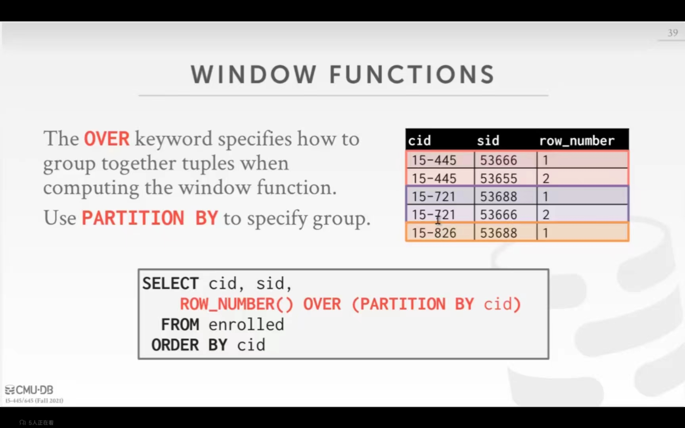

Cmu15445学习记录
#源码bushub和环境 先修知识：常用shell命令：ls，cd Settings > Actions > General > Actions permissions > Disable actions.//这个不是命令，是需要你在github上修改设置
参考CMU15445（2023 spring） lab - 环境配置_J__M__C的博客-CSDN博客 实在不行参考我下面的这个野路子
- 下载clang14软件包
wget http://apt.llvm.org/llvm.sh //下载软件包，使用ls可以看到多了llvm.sh文件
chmod +x llvm.sh //添加可执行权限
sudo ./llvm.sh 14 all //安装，过程中会有一大段脚本语言，等待一下（在最末尾看到[waiting for headers，此时要等），如果失败了可以重启再试一次（做到这里报错了，退出再执行了一次后成功了）
sudo apt autoremove
sudo apt install clang
clang –version //检查clang的版本，如果提示clang命令不存在说明没安装成功
- 然后在bustub.private目录下执行
- 最后make check-tests测试是否成功
索引和遍历0. 查询优化器 Select count(*)有优化 Select AVG(gpa)
存储引擎
中级数据库语句
- 数据库操作语句（DML） procedural 有过程的，自己指定查询方法(关系型代数) non-procedural 没有过程，只告诉数据库自己需要某个结果，比如>select a from
关系代数算子(relational algebra)
Cmu15445学习记录 源码bushub 先修知识：常用shell命令：ls，cd Settings > Actions > General > Actions permissions > Disable actions.//这个不是命令，是需要你在github上修改设置
参考CMU15445（2023 spring） lab - 环境配置_J__M__C的博客-CSDN博客 实在不行参考我下面的这个野路子 下载clang14软件包 wget http://apt.llvm.org/llvm.sh //下载软件包，使用ls可以看到多了llvm.sh文件 chmod +x llvm.sh //添加可执行权限 sudo ./llvm.sh 14 all //安装，过程中会有一大段脚本语言，等待一下（在最末尾看到[waiting for headers，此时要等），如果失败了可以重启再试一次（做到这里报错了，退出再执行了一次后成功了） sudo apt autoremove sudo apt install clang clang –version //检查clang的版本，如果提示clang命令不存在说明没安装成功
然后在bustub.private目录下执行 最后make check-tests测试是否成功
关系代数中常用的运算符号，用于描述对关系（表）进行的操作。
σ (Select)：选取满足某一条件的行。 π (Projection)：选取指定列，即去掉不需要的列。 ∪ (Union)：取两个关系的并集，要求两个关系的列数相同。 ∩ (Intersection)：取两个关系的交集，要求两个关系的列数相同。 – (Difference)：取两个关系的差集，要求两个关系的列数相同。 × (Product)：求两个关系的笛卡尔积，即把两个关系中的每个元组都进行组合。 ⋈ (Join)：连接两个关系，把它们的公共列组合成一个关系。具体有自然连接、等值连接、外连接等多种方式。
→ σb_id=102(R⋈S) vs. (R⋈(σb_id=102(S))//第一个先运算R⋈S再查询，第二个现在S里面找σb_id=102再进行R⋈S SQL is the de facto standard(SQL是大多数据库使用的标准) 索引和遍历0. 查询优化器 Select count(*)有优化 Select AVG(gpa)
- Select,Projection(投影),Union,Intersection,Difference,Product,Join.
- PROJECTION,SELECT b_id-100,a_id FROM R WHERE a_id = 'a2',自动投影
- UNiON ALL(不去重),(SELECT * FROM R) UNION ALL (SELECT * FROM S) //S和R的两张表结果相同，将它俩合并后输出,all是不去掉充分的
- INTERSECTION (交集),(SELECT * FROM R) INTERSECTION (SELECT * FROM S) //取两个表的交集
- DIFFERENCE (取补集),(SELECT * FROM) EXCEPT (SELECT * FROM S)
- PRODUCT (取笛卡尔积) (SELSECT * FROM) CROSS JOIN S;或者SELECT * FROM R,S//隐式的join
- JOIN,SELECT * FROM R NATURAL JOIN S;//一般不加natrual
- extra operators Rename,
数据和查询语言解耦，SQL,聚会函数(aggregates)
- 函数count,sum,avg支持DISTINCT,把重复的去掉
- select AVG(R),e.sid FROM enrolled AS e, student AS s WHERE e.sid = s.sid (GROUP BY e.cid) (HAVING AVG(s.gpa) >3.9);
- 不加group by会报错,分组求平均值（相同e.cid 的求平均值）
- %模糊查询不要放最左边，（最左匹配原则）,不然难以优化
output control
- 1.输出重定向,即把输出语句用作输入，如INSERT INTO CourseIds (SELECT DISTINCT cid FROM enrolled);//把括号内容的输出用作输入
- 2.输出设定
output control:order by 1,//根据第一列排序
order by grade DESC,sid ASC; //DESC降序，ASC升序，不写默认升序
子查询，查询嵌套（nested queries）
- 1.子查询关键字：ALL,ANY,IN,EXISTS(子查询只要有结果就可以)
SELSECT name FROM student WHERE sid IN(SELECT sid FROM enrolled WHERE cid = '15-445'); //ANY效果和IN一样
SELSECT * FROM course WHERE NOT EXISTS(SELSECT * FROM enrolled WHERE course .cid = enrolled .cid); //排除掉括号内的结果后输出
窗口函数
SELECT *, ROW_NUMBER() OVER() AS row_num FROM enrolled; //添加一行显示它的顺序，
SELECT *, ROW_NUMBER() OVER(PARTITION BY cid) FROM enrolled; // 比如一列由多个cid相同的，就会将cid相同的排列，如下图所示

还可以用order by代替PARTITION BY
CTE(COMMON TABLE EXPRESSIONS),内部视图
WITH cteSource(maxId) AS (SELECT MAX (sid) FROM enrolled ) SELECT name FROM student,cteSource WHERE stuendt.sid = cteSource.maxId; //用maxId,作为括号内语句输出内容的名字
- CTE循环，炫技，没什么用。
总结，尽量把想要的结果用一个SQL语句查询起来 ,尽量把优化的事情交给数据库(前提是数据库不弱);如果小公司数据库弱则需要自己拆分业务